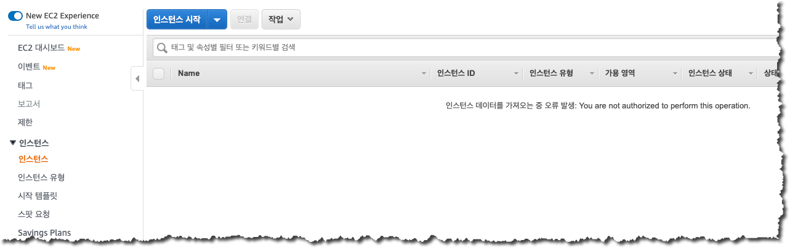
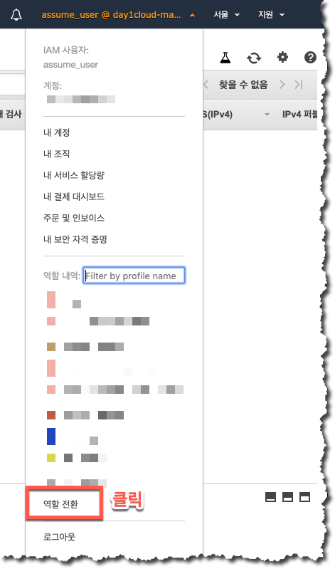
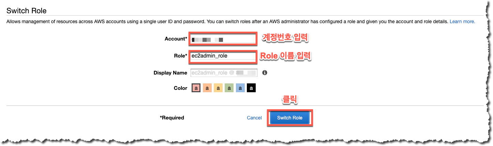
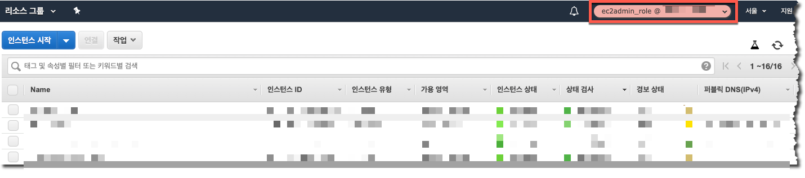

역할(Role)의 사용
생성한 역할을 Management Console 을 이용하여 사용하도록 하겠습니다.
이 과정에서는 위 과정에서 만들었던 assume_user 라는 사용자가 Role Switch 라는 기능을 통해서 특정 Role 을 호출하고 해당 Role 에 할당되어 있는 권한을 수임하는 과정을 살펴보도록 하겠습니다.
AWS 에서는 다양한 AWS 사용 환경에서 보다 안전한 자격증명의 관리를 위하여 Role 을 사용을 권장하고 있으며 이 과정에서 다루는 IAM 사용자의 Role Switch 후 권한 사용 역시 환경에 따라 권장되는 운영 방식 중의 하나입니다.
- 먼저, assume_user 사용자의 권한을 확인하기 위하여 AWS Management Console 에 assume_user 사용자 계정 정보를 이용하여 접속합니다.
- assume_user 로 로그인 후 AWS 의 EC2 나 IAM 과 같은 메뉴를 클릭하여 각 서비스에 대한 접근 권한이 없는 것을 확인합니다.

- EC2 관리 권한이 있는 ec2admin_role 로 Role Switch 를 위하여 Management Console 화면 우측 상단의 IAM 사용자 이름을 클릭한 후 하위 메뉴에서 다시 “역할 전환” 을 클릭합니다.

- 역할 전환을 위해서는 아래 화면과 같이 역할 전환을 위하여 해당 역할이 속한 계정 번호 그리고 전환하고자 하는 역할의 이름을 입력하여야 합니다. 참고로, 이 과정에서의 역할은 이전 과정을 통해 생성한 역할이며 자신의 계정에 속해 있으므로 자신의 계정 번호를 입력한 후 Role Name 에는 이전 과정에서 생성하였던 “ec2admin_role” 을 입력한 후 “Role Switch” 버튼을 클릭합니다.

- Role Switch 가 정상적으로 이뤄졌다면 아래 화면과 같이 Username 부분이 전환된 역할의 이름으로 바뀐 것을 확인할 수 있습니다. 또한, 역할을 사용하는 환경에서는 Username 부분이 IAM 사용자일 때와 다르게 지정된 색깔로 강조처리 되어 있는 것을 확인할 수 있습니다. Role Switch 가 완료된 상태에서 사용중인 ec2admin_role 의 경우 EC2 에 대한 접근 권한을 포함하고 있으므로 EC2 인스턴스 페이지 출력 과정에 에러가 없는 것 또한 확인하실 수 있습니다.
